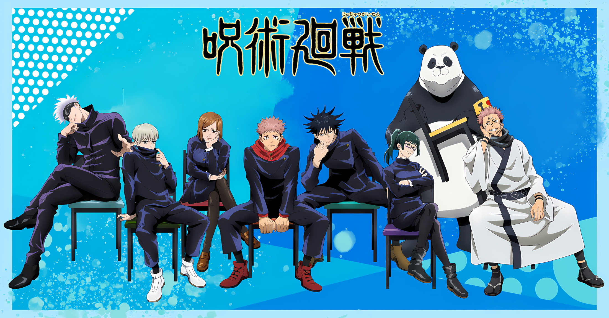

Jujutsu Kaisen é um mangá japonês escrito e ilustrado por Gege
Akutami, serializado na Weekly Shōnen Jump desde 5 de março de 2018.
Os capítulos individuais são compilados em volume tankōbon, e
publicados pela Shueisha desde julho de 2018. A série é licenciada e
publicada no Brasil pela editora Panini.
Por: Guilherme Ancheschi Werneck Pereira
Leia mais

One Piece é uma série de mangá escrita e ilustrada por Eiichiro Oda.
Os capítulos têm sido serializados na revista Weekly Shōnen Jump
desde julho de 1997, com os capítulos compilados e publicados em 108
volumes tankōbon pela editora Shueisha até abril de 2024. One Piece
conta as aventuras de Monkey D. Luffy.
Por: Guilherme Ancheschi Werneck Pereira
Leia mais

A série é publicada sob a impressão Dengeki Bunko da editora ASCII
Media Works desde 10 de abril de 2009, com uma série spin-off
lançada em outubro de 2012.
Por: Guilherme Ancheschi Werneck Pereira
Leia mais